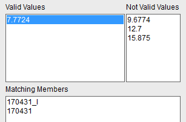

您想要一个孔径为7.7724但没有转动手柄的把手。
在选择族成员对话框的族属性列表中，选择 hub_hole_rad。
有效值列表列出了所有对选定的族属性可能的值。
从有效值列表中选择7.7724。
这个范围限制了那些族成员，可能匹配的成员数目减少到两个。

从族属性列表中，选择 LEVERAGE_BAR。
从有效值列表中，选择 no。
从匹配成员列表中，选择仅有的满足所有准则的家族成员，170431。
点击确定。
组件预览窗口将更新以显示部件族中没有手柄的成员，并且打开了装配约束对话框。